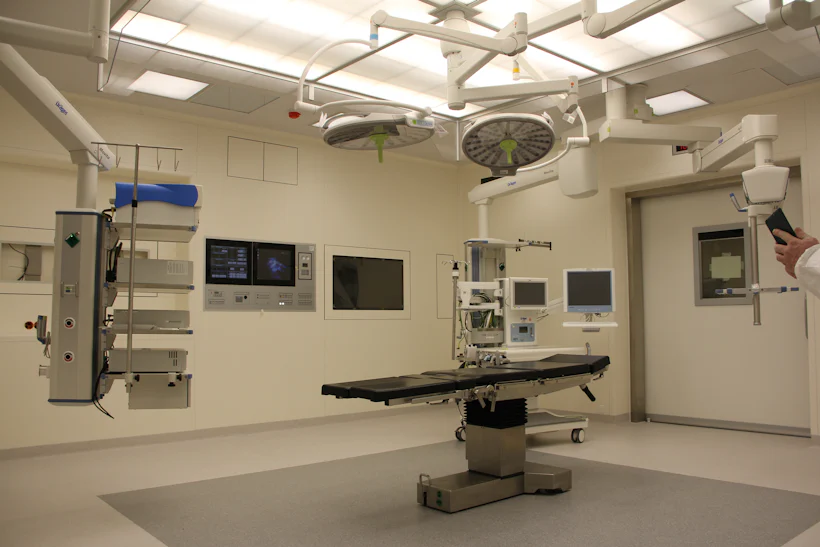
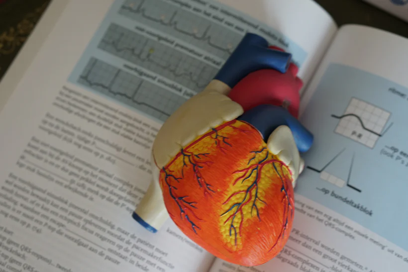

Emergency
24/7 resus, trauma bays and a fast-track minors lane.
Services · always open
From a midnight fever to a planned procedure, Stackly routes you to the right specialist in minutes — with records, labs and billing that finally talk to each other.


24/7 resus, trauma bays and a fast-track minors lane.

Cath lab, echo and a same-day chest-pain clinic.

Gentle care for newborns through teens, parents welcome.

Joint replacement, sports injury and robotic surgery.

MRI, CT and ultrasound read by on-site specialists.
Whatever brings you in, one record follows you through every door.

Resus bays staffed around the clock, with stroke and cardiac fast-tracks.

Cath labs, arrhythmia clinics and heart-failure programmes under one lead.
Kid-sized rooms, play specialists and a NICU that never sleeps.

Joint replacement, sports injury and spine care with robotic precision.

MRI, CT and ultrasound reported by specialists, often while you wait.

Family doctors who know your history and coordinate everything else.

One scan of your ID pulls your whole history to the right desk.

Nurse-led triage orders only the tests you actually need.

Results reach the consultant before you reach the room.
A care plan and a check-in call follow you home.
Our emergency line dispatches the nearest team, pre-books the resus bay and has your records up before the doors open.
Call Now+91 9745634567
8:00avg response
 LIVE
Dr. A. Reyes · GP
HR 74 · SpO₂ 98%
LIVE
Dr. A. Reyes · GP
HR 74 · SpO₂ 98%
Video visits that prescribe, refer and reassure — with the same clinicians you'd see in the building.
An on-site laboratory and six imaging suites mean fewer trips and faster decisions — reviewed by pathologists, never parked in a queue.

See what you'll pay before care begins, with a real person on the line if a claim needs chasing.
In-network · $0 typical copay

"They explained every step before my C-section — I never felt like a number."

"My ECG was read before I finished explaining the pain. That speed saved me."

"The children's team turned a scary night into something my son still talks about."
Still unsure what you need? Our care navigators will point you to the right door, day or night.
Talk to a navigatorNot for emergency or primary care — walk in any time. Specialists are faster with a referral, but our navigators can arrange one in minutes if you don't have it.
We're in-network with Aetna, BlueShield, Cigna, MultiPlan, Humana and most regional plans. Bring your card and we'll verify cover before treatment.
Yes. Reports, prescriptions and care plans land in your Stackly record the moment they're signed, and you can share them securely with any clinician.
Most connect in under a minute, 7am to midnight. Outside those hours, an on-call clinician is still reachable by phone.
Both. Pediatrics, adult specialties and senior care sit side by side, so families can be seen in the same visit whenever possible.
Step-free entrances, 400 parking spaces and a drop-off loop at every clinic, with accessible rooms and interpreters on request.

Pick a door, a time and a clinician — or let us choose for you. Same-day slots refresh every morning.